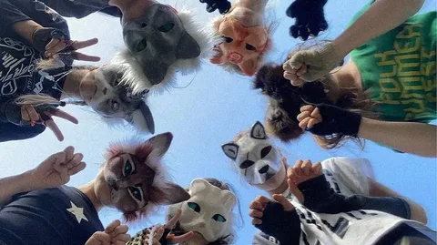

Наша квадроберская жизнь бывает сложна
В юности даже моя семья забуллила меня
Миллионы путей но не все из них открыты
Куда ведет мой путь не знаю лишь бы не быть прибитым
Вокруг одни враги за что то ненавидят нас
А мы стараемся лишь жить особенно сейчас
Нам объявляют битвы опять хоббихорсеры
Анонимусы куда то лезут со своими притворствами
На самом деле, квадробика – явление не новое. Изначально это спортивное направление, зародившееся ещё в 2000-е годы. Его основателем считается японский спринтер Кеничи Ито. Спортсмен увлекался бегом на четвереньках. В 2008 году он преодолел 100-метровку всего за 18,58 секунды. С тех пор спринтер получил прозвище Человек-обезьяна. Через семь лет Ито побил собственный рекорд, пробежав дистанцию за 15,71 секунды.
В 2020 году всё больше людей стали подражать животным. Тренд распространился благодаря соцсетям. Подростки начали идентифицировать себя с разными животными, копируя их повадки и поведение. В России о тренде заговорили в этом году.